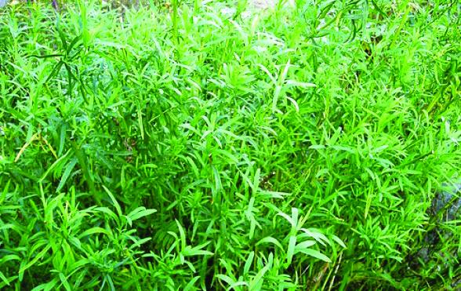
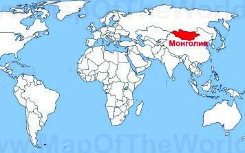
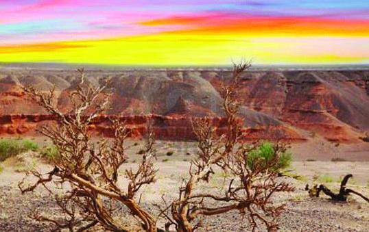
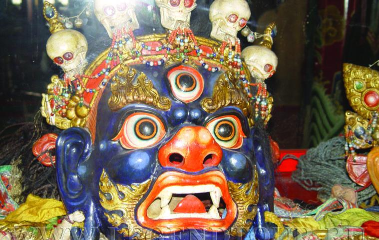
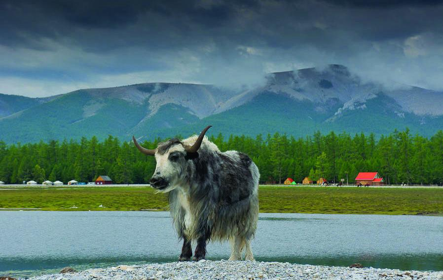
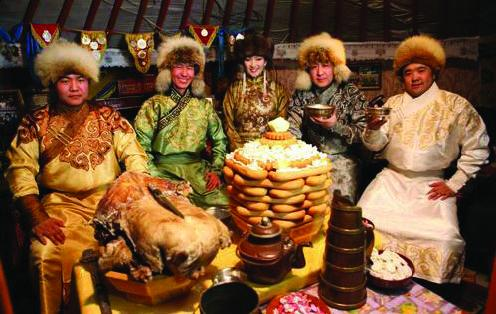

Многолетнее травянистое растение, вид рода Полынь семейства Астровые.

Корневище деревянистое.
Стебли немногочисленные, высотой 40–150 см, прямостоячие, голые, желтовато-бурые.
Стеблевые листья цельные, продолговато– или линейно-ланцетные, заостренные; нижние листья на верхушке надрезанные.
Цветки бледно-желтоватые. Соцветие метельчатое, узкое, густое; листочки обертки короткоэллиптические или почти шаровидные; оберточка голая, зеленовато-желтоватая, блестящая, по краю пленчатая.
Плод – продолговатая семянка, без хохолка.
Цветет в августе-сентябре. Плоды созревают в октябре.
Родина эстрагона – Восточная Сибирь и Монголия.
В диком виде произрастает в Восточной Европе, Средней Азии, Китае, Пакистане и Индии. В Северной Америке растет от Центральной Мексики до субарктических районов Канады и Аляски. На территории России встречается в европейской части, в Западной Сибири, на юге Восточной Сибири и Дальнего Востока.
Культивируется повсеместно.
Обитает на сухих остепненных склонах, на галечниках, иногда на полях.
Использование эстрагона в кулинарииЭстрагон, один из видов полыни, напоминает ее только внешним видом, поскольку это растение, родиной которого является Монголия и Восточная Сибирь, совершенно лишено горечи. Эстрагон известен нам как тархун, хотя в народе его чаще называют драгун-травой и страгоном. Пряный аромат и пикантный, слегка терпкий вкус тархуна, чем-то похожий на анис, делает блюда и напитки свежими, яркими и оригинальными.
В листьях тархуна содержится большое количество эфирного масла, которое и делает растение таким душистым. Наличие каротина, аскорбиновой кислоты, большого количества смол, дубильных веществ и витаминов группы B позволяет эстрагону занять достойное место среди лекарственных растений. Эстрагон славится противовоспалительным, общеукрепляющим и антисептическим воздействием на организм, поэтому народные лекари используют его как эффективное средство от зубной и головной боли, от депрессии, бессонницы, авитаминоза, заболеваний органов дыхания и женской половой сферы. При этом следует помнить, что душистый, приятный на вкус эстрагон, полезные свойства которого используются в приготовлении лекарственных сборов, настоек и мазей, не стоит употреблять людям, страдающим болезнями желудка, беременным женщинам и кормящим матерям.
Французы первыми начали использовать эстрагон в кулинарии, когда эта пряность в XVII веке была завезена в Европу. Именно французские гурманы изобрели рецепты блюд с эстрагоном, добавляя эту траву в напитки, салаты, подавая ее с мясом, морепродуктами и овощами.
Тархун применяется в основном как приправа, аромат и вкус которой особенно ярко проявляются в сочетании с кислыми продуктами – лимонным соком, ягодой и фруктами.
Стебли эстрагона незаменимы в приготовлении маринадов и солений, с их помощью можно ароматизировать заправки для салата, растительное масло, майонезы и соусы. Кроме того, эстрагон является отличным консервантом, подавляющим размножение бактерий и позволяющим сохранить вкус и аромат овощей, грибов и фруктов, поэтому современные хозяйки используют его в домашних заготовках.
Свежие и сушеные листья эстрагона подаются в качестве гарнира к мясным, рыбным, овощным и яичным блюдам, добавляются в бульоны, супы, окрошки и соусы, а кашицей из измельченных листьев перед маринованием натираются куски мяса или рыбы. В Украине эстрагон принято добавлять в сыры и простоквашу, а во Франции эта пряность входит в состав дижонской горчицы. Из тархуна делают вкусные безалкогольные напитки, которые выпускались уже в советские годы, его листья придают винам и ликерам яркость и насыщенность.
Свежий эстрагон нельзя подвергать тепловой обработке, поскольку он приобретает горький вкус, поэтому его рекомендуется использовать в салатах или добавлять в уже готовые блюда.
? Сушеные листья тархуна закладывают в супы и горячие вторые блюда за 5 минут до готовности.
? Если в бутылку с винным уксусом положить небольшую веточку тархуна, через месяц уксус станет душистым и слегка островатым.
? На листьях тархуна настаивают очень вкусную водку – для этого рекомендуется на несколько недель положить в бутылку свежий или сухой пучок веток эстрагона.
? Добавив в тесто для выпечки хлеба щепотку сушеного или свежего тархуна с можжевеловыми ягодами, можно получить лесной аромат выпечки.
Эстрагон заготавливают на зиму как укроп и петрушку, смешивая мелко нарезанные листья с солью, после чего смесь укладывают в банки и хранят в прохладном месте.
РецептНапиток из эстрагона (тархуна)
Эстрагон 200 грамм
Лимон 1 шт
Лайм 1 шт
Кипяток 400 грамм
Сахар 1 столовая ложка
1. Тархун хорошо помыть и крупно нарезать.
2. Добавить полстакана кипяченой холодной воды, сок лимона и лайма, а также одну столовую ложку сахара. Все хорошо помять мадлером или измельчить зелень в блендере.
3. Процедить сок и хорошо отжать зелень.
4. Развести приготовленный сок холодной кипяченой водой до нужной консистенции (ориентировочно сок к воде 1/4) и, если нужно, добавить сахар по вкусу.
5. Подавать напиток в стакане с кусочками льда.
Напиток окажет положительное воздействие на организм человека и укрепит иммунную систему благодаря большому количеству витамина С.
Пищевая ценность в 100 граммах:Белки 1,5 гр
Жиры 0 гр
Углеводы 5 гр
Калорийность: 24,8 кКал
В 100 г сырого вещества находится от 33,4 до 200 мг аскорбиновой кислоты, 4–15 – каротина, 170–172 – рутина, 0,3 – витамина Вр, 0,05 – витамина В2, 0,5 – витамина РР, минеральных солей: кальция – 1,9, магния – 2,11, калия – 1,32, железа – 16,3, фосфора – 226,5 мг/100 г. В составе эфирных масел имеются эстрагол (60–70 %), сабинен, мерцен, терпен, анисовый и метаоксикоричный альдегиды, оцимен, фелландрен и др.
Использование эстрагона в медицинеДействие эстрагона многогранно и выражается следующими свойствами:
? мочегонным;
? противовоспалительным;
? успокаивающим;
? общеукрепляющим;
? тонизирующим;
? противоглистным;
? антиспазматическим;
? заживляющим;
? противоцинготным;
? антисептическим;
? стимулирующим;
? противоревматическим.
Самым известным и, если можно так сказать, «популярным» свойством эстрагона является его способность, подобно кофе, активизировать физические и умственные возможности человека.
В отличие от кофе, влияние которого основано на кофеине, воздействие эстрагона является следствием оптимального сочетания в его составе обширного комплекса полезных веществ: микро– и макроэлементов, эфирных масел, флавоноидов, насыщенных и ненасыщенных жирных кислот, рутина и различных ферментов.
Употребление отваров и напитков на основе эстрагона повышает работоспособность, снижает общий уровень артериального давления, нормализует работу центральной нервной системы, сердца, сосудов, усиливает перистальтику кишечника и способствует лучшему усвоению пищи.
Благодаря тому, что в составе эстрагона находится много «сердечных» элементов, его регулярное употребление в различных видах помогает предотвратить развитие атеросклероза и других болезней сердечно-сосудистой системы.
Также травяные смеси на основе тархуна являются прекрасным общеукрепляющим и поливитаминным средством, помогающим без особых проблем преодолеть весенний гриппозный период.
Полоскание полости рта отварами этой травы позволяет избежать развития кариеса и избавиться от неприятного запаха, в том числе табака и перегара.
Врачи рекомендуют употреблять эстрагон в небольших количествах, так как он содержит много активных компонентов, например, тех же эфирных масел. Чрезмерное добавление его в рацион и использование препаратов на его основе может спровоцировать возникновение аллергических реакций, а в отношении беременных (на малых сроках) женщин даже стать причиной выкидыша. Также нельзя его употреблять людям, страдающим эпилепсией или судорогами.
В качестве лекарственного сырья для изготовления различных препаратов эстрагон используют давно. Сведения о нем можно найти даже в наиболее древних медицинских трактатах, написанных великими учеными античности.
В официальной медицине из семян тархуна делают эстрагоновое эфирное масло, которое активно используют в различных лечебных мазях, растираниях, аэрозолях для полости рта, пастилках от кашля и т. п.
Настойка на основе эстрагона помогает справиться с заболеваниями полости носа. Активно его добавляют и в лекарства для лечения кожных болезней, например чесотки, ожогов или экземы.
В народной медицине сушеную траву эстрагона включают в составные фитосборы, если хотят добиться следующих результатов:
? устранить мигрень, зубную или мышечную боль, бессонницу;
? повысить мужское либидо;
? избавить от депрессии и нивелировать последствия перенесенного стресса;
? очистить организм от паразитов и шлаков;
? нормализовать менструальный цикл.
Однако стоит помнить, что перед применением таких безопасных и натуральных на первый взгляд травяных сборов нужно проконсультироваться с врачом.
Использование эстрагона в эзотерикеВидовое название тархуна, dracunculus, переводится с латыни как «маленький дракон» или «дракончик». Существует несколько версий его происхождения. Возможно, что оно связано с формой листьев эстрагона. Они узкие и на конце иногда разделяются на 2–3 лопасти, благодаря чему напоминают раздвоенный змеиный язык. Не исключено, что все дело в форме его корня, чем-то похожего на змею. А может, тархун был удостоен такого названия из-за того, что, по средневековым поверьям, он помогает от укусов змей и бешеных собак. Хотя подобными магическими свойствами наделяли все полыни, никак не выделяя в этом отношении эстрагон.
Так или иначе, но во многих языках, включая арабский, иврит, многие европейские языки и даже китайский, в местных названиях эстрагона фигурирует упоминание дракона. Любопытно исландское наименование этой травы – fa?fnisgras, что переводится как «трава Фафнира». Фафниром звали ужасного легендарного дракона скандинавской мифологии, поверженного героем Сигурдом.
Использование эстрагона в косметологииЭстрагон используют и как компонент для косметических средств, приготовляемых в домашних условиях. Составы с ним помогают восстановить кожный покров, пострадавший от неблагоприятных внешних факторов. Вот некоторые из наиболее распространенных рецептур, применяемых в быту:
? Омолаживающая маска. 50 г свежих измельченных листьев смешивают со ст. л. творога и ст. л. морковного сока. Полученную смесь массирующими движениями распределяют по лицу и выдерживают в течение 10 минут, после чего удаляют при помощи контрастного умывания.
? Подтягивающая и отбеливающая маска для области декольте. 100 г сухого и хорошо измельченного эстрагона смешивают со стаканом молотых овсяных хлопьев и запаривают горячей водой (90 градусов). В получившуюся теплую (не горячую!) массу добавляют один куриный белок, затем наносят готовый состав на шею и декольте, укрывают тканью. Выдерживают такой компресс 20–30 минут и смывают при помощи контрастного душа.
? Увлажняющий и питательный лосьон. В крепком теплом отваре эстрагона растворяют 2 ст. л. натурального сливочного масла. Наносят на лицо вечером, удаляют с кожи посредством контрастного умывания.
Масло эстрагонаИз листьев растения также изготавливают эфирное масло, которому находят применение в стоматологической практике, в качестве анестезирующего и локального антисептического средства при зубной боли.
Масло является эффективным противоаллергическим средством, оно также снимает мышечные спазмы, поэтому его рекомендуется использовать при лечении аллергического или спазматического кашля.
Эфирное масло эстрагона известно как средство от икоты и других проблем, связанных с пищеварением. Масло вызывает аппетит и улучшает пищеварение, обеспечивая профилактику вздутия живота и способствуя выводу из организма газов.
Помимо всего прочего, масло помогает справиться с укачиванием в любом виде транспорта.
При распылении масло помогает избавиться от плохого настроения, так как эстрагон приводит в тонус работу мозга, способствуя продуктивной умственной деятельности.
Более того, эстрагон отпугивает насекомых и наполняет ваш дом приятным ароматом. Наконец, масло рекомендуется применять для обезболивания, например, во время месячных или при сведении суставов, при судороге или воспалении седалищного нерва.
Сочетаемость с другими ингредиентамиДудник лекарственный, лаванда, лайм, липпия лимонная, мандарин, можжевельник, морковь дикая, пихта, розовое дерево, ромашка, сосна, шалфей мускатный.
Меры предосторожностиНе использовать во время беременности и кормления. Не наносить в неразбавленном виде на кожу.
А теперь отправимся в путешествие на родину эстрагона – в Монголию…
МонголияЭто государство, расположенное в Центральной Азии. Имеет границы с Россией (Республика Алтай, Республика Бурятия, Республика Тува, Читинская область) и Китаем. Население страны составляет около трех миллионов человек, половина из которых – горожане.

Столица государства – город Улан-Батор. Другие крупные населенные пункты Монголии – Дархан, Эрдэнэт, Арвайхээр, Баганур, Булган, Чойбалсан, Алтай, Алтанбулаг. В Монголии существуют как постоянные, так и кочевые места проживания людей.
Территория страны состоит из 21 аймака (области), каждый из которых поделен на сомоны (районы). В каждом сомоне есть административный центр, населенные пункты и баги (бригады). Всего сомонов насчитывается 342, а багов – 1539.
Государственное устройствоВ декабре 1911 в городе Урге (ныне Улан-Батор) провозглашена независимость Монголии. 26 ноября 1924 года парламент страны (Великий народный хурал – ВНХ) провозгласил создание Монгольской Народной Республики (МНР) и принял первую конституцию. Вплоть до 1990 года Монголия являлась социалистической страной с одной правящей партией – Монгольской народно-революционной партией. 21 ноября 1991 года Великий народный хурал принял решение изменить название страны и после вступления в силу новой конституции (12 февраля 1992 года) МНР стала называться Монголия. Монголия – парламентское государство с местным самоуправлением.
В Монголии недопустимо образование автономных территорий.
Конституция страны принята в 1992 году. Она гарантирует основные права граждан Монголии, включая свободу слова и политических убеждений. Согласно Конституции, главой государства является президент, а высшим законодательным органом – однопалатный Великий Государственный Хурал.
Президент страны является главой государства и верховным главнокомандующим вооруженными силами. Президент избирается на 4-летний срок путем всенародного голосования. Президентом Монголии может быть избран гражданин Монголии, достигший возраста 45 лет, постоянно проживающий на родине последние пять лет. Президент может переизбираться еще на один срок. В отсутствие президента функции главы государства исполняет председатель Великого государственного хурала.
Законодательную власть осуществляет парламент – Великий Государственный Хурал (ВГХ) (монг. Улсын Их Хурал). Парламент Монголии – высший законодательный орган страны, состоит, по Конституции, из 76 членов. Основная форма деятельности – сессии, которые заседают при наличии не менее 2/3 всех членов парламента.
Возглавляют ВГХ председатель, зампред и генсекретарь, избираемые тайным голосованием из его состава. Парламент формирует высшую исполнительную власть в Монголии – правительство во главе с премьер-министром.
Великий Государственный Хурал в сотрудничестве с правительством создает законы и принимает решения о вступлении их в силу. Политические партии, представленные в парламенте, выдвигают кандидатуры для прямых президентских выборов. Хурал утверждает кандидатуру премьер-министра (предлагаемую президентом) и других министров. Великий Государственный Хурал вправе преодолеть вето президента на законопроект, для чего требуется 2/3 голосов. Такое же количество голосов требуется для изменения конституции.
Каждый из 76 членов парламента представляет свой избирательный округ и выбирается простым большинством на срок четыре года. Выборы признаются состоявшимися только при 50 %-й явке избирателей. Монгольские граждане могут голосовать с 18-летнего возраста при условии проживания на территории Монголии. Баллотироваться могут граждане старше 25 лет.
Исполнительную власть осуществляет правительство, формируемое ВГХ по предложению премьер-министра и согласованию с президентом. Кандидатуру главы Кабинета министров представляет на рассмотрение ВГХ президент. Правительство подотчетно ВГХ.
Глава Правительства – премьер-министр страны – назначается Великим Государственным Хуралом (Парламент Монголии). Министры назначаются по отдельности Великим Государственным Хуралом.
ИсторияМонголия – это земля, из которой некогда в Европу пришли одни из самых суровых завоевателей в мире. Ее история началась достаточно давно, первые монгольские княжества здесь образовались в 11-м веке, а уже в 13-м веке вождь Темучин объединил все монгольские племена, создав наиболее могучую и гибкую военную силу того времени. Монгольский народ прозвал своего вождя Великим и нарек его Чингисханом, что и означало: «Великий Хан». Под его рукой монголы захватили технологически продвинутый Китай, бескрайнюю Персию и большую часть княжеств, из которых тогда состояла Киевская Русь.
Со смертью Чингисхана огромное государство монголов распалось на части и стало пожирать само себя. Уже в 1480 году наиболее сильное из русских княжеств, Московское, поработив все остальные, ответило монголам «взаимностью» и захватило большую часть их земель.
Территория современной Монголии в 1636 году перешла под власть маньчжуров, а еще спустя сто лет вошла в состав китайской империи. В 1924 году Монгольское государство смогло вновь обрести независимость, тогда оно называлось Монгольской Народной Республикой, а в 1991 году – Республика Монголия. Это государство признано на международном уровне и является полноправным членом ООН.
ЭкономикаЭксперты Всемирного банка, Международного валютного фонда, Frontier Securities и других международных организаций относят Монголию к числу стран, которые в краткосрочной перспективе будут развиваться наиболее высокими темпами. По прогнозам специалистов Всемирного банка, в ближайшие десять лет экономика Монголии будет расти в среднем на 15 % в год.
Так, по данным государственного комитета статистики, на которые ссылается информационное агентство «Синьхуа», реальный рост ВВП страны в 2011 году составил 17,3 %, а номинальный и вовсе достиг фантастической цифры в 27,8 %. Для сравнения: в Китае тот же показатель составил 9,2 %, в Индии – 7,8 %, а в России, по информации Федеральной службы государственной статистики, 4,3 %.
Экономика Монголии сосредоточена в таких отраслях, как добыча полезных ископаемых и сельское хозяйство. Такие минеральные ресурсы, как медь, уголь, молибден, олово, вольфрам и золото, составляют значительную часть промышленного производства страны.
Медь и концентрат молибдена, флюорит, кашемир, шерсть, кожа, одежда, кожаные изделия, мясо являются основными экспортными товарами.
В 2011 году географическая структура монгольского экспорта была следующей: Китай – 82 %, Канада – 8 %, страны Евросоюза – 4 %, Россия – 3 %, Южная Корея – 1 %, другие страны – 2 %.
Импортом являются нефтепродукты, промышленное и индустриальное оборудование, потребительские товары.
В 2005 году импортные товары поступали из России – 34,5 %, Китая – 27,4 %,Японии – 7,1 %, Южной Кореи – 5,3 %.
В настоящее время Монголия постепенно избавляется от импортной зависимости. К примеру, в ближайшее время в городе Дархан будет открыт первый в Монголии нефтеперерабатывающий комбинат.
ТуризмМонголию в турбизнесе называют страной вечно голубого неба и ярких впечатлений.

Основной туристический сезон начинается в конце мая и длится до сентября.
На туристов в стране работают около 250 местных частных агентств, причем 80 % туристического рынка делят между собой 10 крупнейших из них. Они объединены в МАТА – Монгольскую ассоциацию туристических агентств.
Всю деятельность турагентств координирует Национальный центр туризма, созданный при Министерстве развития инфраструктуры.
Отели в европейском понимании расположены только в столице и некоторых крупных городах. За их пределами единственным вариантом проживания для туристов является юрта.
Природные ландшафты – главная монгольская достопримечательность. Здесь есть масса разнообразных природных биотопов и пейзажей: степи с озерами и реками в центре страны, тайга и горы – на севере, холмы и гигантская пустыня Гоби с крупнейшим кладбищем останков доисторических животных – на юге. В Монголии много редких растений и животных.
В стране 22 национальных парка, многие из которых обладают отлично развитой туристической инфраструктурой: проложенные дороги, комфортабельные кемпинги, экскурсионные программы, сувенирные магазины и кафе. Каждый из парков предлагает посетителям наблюдение за дикими животными и птицами, а также собственные уникальные маршруты и программы.
Монголия – древнее государство, поэтому здесь есть все предпосылки для активного и успешного развития культурно-исторического туризма.
Основными экскурсионными объектами являются архитектурные памятники монгольской империи средних веков (например, древний город Каракорум); буддийские монастыри с храмами Эрдэни-Дэу, Амарбаясгалант, Гандан; наскальные рисунки и рунические стеллы в степях; гора Борг-Ул, место рождения и детства Чингисхана.
Среди современных достопримечательностей можно назвать крупные города Монголии, особенно столицу Улан-Батор, где монастыри, азиатские рынки и музеи соседствуют с театрами, парками аттракционов, галереями.
Отдельно нужно сказать о местных грандиозных национальных красочных фестивалях и праздниках, на которые собирается масса туристов:
1. Фестиваль Надом – многолюдный трехдневный июльский праздник «трех мужских игр»: борьбы, скачек и стрельбы из лука. Проводится по всей стране.
2. Цаган Сар – монгольский Новый год по лунному календарю, отмечается в начале весны.
Достопримечательности1. В самом центре Улан-Батора спрятана яркая жемчужина архитектуры и истории Монголии – храмовый комплекс Чойджин-ламы, или по-монгольски Чойжин Ламын Сум, построенный в 20-м веке под резиденцию государственного оракула Лувсанхайдава, брата VIII богдо-хана Джэбзундамбы.
Строительство храмового комплекса началось в 1904 г. под руководством архитектора Омбогийна, вдохновлявшегося в своей работе творчеством китайских зодчих. На одни украшения комплекса ушло 2 тонны чистого серебра. Строительство завершилось спустя четыре года и до самого 1938 г., когда по всей стране закрывались религиозные учреждения, храм оставался действующим.

На территории комплекса располагается пять храмов. В главном из них находятся такие реликвии, как созданная в 18-м веке статуя Будды Шакьямуни, статуя Лувсанхайдава и статуя Балданчоймболона, учителя богдо-хана, с его мумифицированными останками внутри. В Гонгханге (Храм Божественных хранителей) за главным залом стоит трон оракула и восхитительная статуя Яб-юм.
2. Монумент Чингисхану (Золотой Кнут) – величественная статуя Чингисхана, которая считается самой высокой конной статуей в мире. Вокруг 40-метрового монумента установлено 36 колонн, которые символизируют 36 ханов, правящих после Чингисхана. По легенде, именно в этом месте началась история Монгольской империи: на вершине холма юный Тэмуджин нашел золотой кнут, который символизировал удачу. Это был знак, что боги благословляют будущего хана на объединение кочевых племен монголов.
3. Сухбаатарын Талбай – центральная площадь столицы Монголии, посвященная Чингисхану. Площадь окружают Дворец правительства, Музей монгольской государственности, Дворец культуры, Ленинский клуб, Театр оперы и балета. Кроме памятника самому Чингисхану здесь есть монументы Самба, Зорига и Марко Поло, а также стела с выгравированным текстом и мелодией государственного гимна.
4. Пустыня Гоби – величайшая природная достопримечательность страны. Пустыня Гоби, огибающая Монголию песчаной дугой от гор Алтая и Тянь-Шаня вдоль границы с Китаем до гор Наньшань и Алтынтаг и реки Хуанхэ. Гоби потрясает своими размерами: ее площадь составляет 1,5 млн кв. км, и на этих бескрайних просторах есть много интересного.
Останки доисторических динозавров были найдены в пустыне Гоби в начале 20-го века учеными Американского музея естественной истории, которые искали доказательства теории, что Центральная Азия и есть колыбель человеческой цивилизации. Окаменелые кости, яйца динозавров и их гнезда помогли сделать множество открытий о том, как жили эти древние ящеры и как растили свое потомство.
Одна из самых потрясающих пустынь мира – Гоби – нарисована и вылеплена силами природы из прозрачно-желтых песков, солончаков и скал, вибрирующего раскаленного воздуха и гулкой тишины.
У монголов существует разделение пустыни Гоби на 33 сектора, хотя человеку, не знакомому с ней близко, трудно это понять и представить. 33 маленьких пустыни внутри одной огромной Гоби отличаются по типам структуры, видам растительности и цветам: есть здесь цветущие степные равнины, живописные скалы, глинистые и каменистые гамады, обширные котловины, саксауловые рощи, редкие оазисы, солончаки и прочее многообразие ландшафта.
5. Горхи-Тэрэлж – национальный парк, раскинувшийся в кольце гранитных скал, которые человеческое воображение превратило в «уснувшего динозавра», «человека с книгой» и «огромную черепаху Мэлхий-хал». В Горхи-Тэрэлж можно также посетить парк скульптур динозавров, буддийский храм Арьяабал, сфотографироваться на фоне ледникового озера Хагин-Хар и пройтись по деревянному мосту над рекой Тола.
6. Дворец Богдо-гэгэна – величественный комплекс зданий в центре столицы. Это храм «живого Будды» и резиденция главы буддийской общины. Комплекс состоит из зимнего и летнего дворца, в их стенах расположены многочисленные музеи, в частности Национальный музей Монголии.
7. Монастырь Гандан – одно из девяти чудес Монголии. В комплекс Гандан Тэгчинлин хийд, название которого переводится как «Большая колесница всеобъемлющей радости», входят храмы, субурганы, пагоды и Буддийский университет.
8. Хубсугул – самое глубокое озеро страны с кристально чистой водой, которая пригодна для питья в сыром виде. Озеро образовалось в кратере потухшего вулкана. Его часто называют «младшим братом Байкала».

9. Международный парк Будды расположен у подножья холма Зайсан – смотровой площадки, с которой открывается вид на весь Улан-Батор. Главное украшение парка – 23-метровая статуя будды Шакьямуни, изготовленная из «юлаета».
10. Эрдэнэ-Зуу – самый древний буддийский монастырь Монголии, дошедший до наших дней. Его название переводится как «Сотня сокровищ». При строительстве монастырского комплекса, который насчитывал 62 храма, использовались материалы с пожарищ и развалин славной столицы Каракорума.
Национальная кухняПищевой рацион монголов традиционно состоит из продуктов скотоводческого хозяйства. Кухня Монголии, с точки зрения цивилизованного человека, кровожадна, жестока и жирна. В то же самое время национальная кухня Монголии славится блюдами, приготовленными из молочных и мясных (в основном баранина, реже – говядина или конина) продуктов.
Вяленое мясо «борц» – пожалуй, самая распространенная еда здешних жителей. Мясо крупной рогатой или двугорбой скотины, разрезанное на полосы длиной 20–30 сантиметров, зимой и летом (в тени) развешивается как белье на веревках, и вымораживается-сушится. Эти мясные ленты каштанового цвета кочевники грызут, едят размоченными или вареными.
Любимое национальное блюдо монголов – пирожки с мясом, лапша с мясом и «бууз» – они напоминают наши пельмени.
Одно из традиционных монгольских блюд – «боодог»: туша козла в собственной шкуре, запеченная с помощью раскаленных камней, помещаемых внутрь.
Молочные продукты в Монголии разнообразны. Это чай с молоком, сыр «бислаг», сушеный творог «арул», простокваша «тарак», пенки «урюм», молочная водка «архи», кумыс «айраг», топленое масло «шар тос». Молоко в пищу употребляют всех сортов – коровье, сарлычье, кобылье, верблюжье, овечье и козье, причем для каждого сорта молока есть свое применение. Кумыс и водку приготавливают из кобыльего молока, масло, пенки и варенец – из коровьего и овечьего. Самое популярное кушанье монгольской народной кухни – пенки, для их приготовления молоко долгое время кипятят на слабом огне, а потом остужают. Когда остынет толстый слой пенок, их осторожно снимают лопаточкой и выкладывают на деревянное блюдо, складывают вдвое, корочкой наружу, немного подсушивают и подают к чаю.

В Монголии существуют и блюда, известные только в этой стране, например, борцог (куски мелко нарезанного теста, обжаренные в бараньем жире или масле), хальмаг (смесь пенок и муки), пирожки с начинкой из сырого мяса.
Любимый напиток в Монголии – чай с молоком, маслом или салом, солью.
Что касается рыбы, то ее до недавнего времени почти не ели, и сейчас-то ее употребляют в пищу в основном только городские жители.
Летом монголы употребляют в основном молочные продукты: кумыс, ряженку «тараг», сладковато-кислый сушеный творог «ааруул», благодаря которому у всех местных ослепительно белые зубы, сделанный из сырого молока сыр «бяслаг» со вкусом и запахом бараньего сала, сытные толстые ломти пенки, получаемой путем долгого кипячения молока, водку «архи» – из кобыльего молока. Последнее, к несчастью этого чрезвычайно приветливого народа, – слишком любимый и плохо усваиваемый ими продукт.
И, наконец, венец монгольской кухни – монгольский чай. Классические правила его приготовления таковы. Воду кипятят в чугунном котле, бросают в нее заварку плиточного зеленого чая и доливают молока. Вновь доводят до кипения, затем добавляют соль, масло, немного поджаренной муки, слегка обжаренного сала бараньего курдюка и костного мозга барана. Пить его необходимо без сахара.
Это интересно…Гигантский червь, который способен убить на расстоянии. Делает он это при помощи яда, который выбрасывает, и этим самым сражает жертву при соприкосновении электрическим разрядом. Еще до недавних времен это было монгольским фольклором, но сейчас в пустынной области на юге Гоби нашли подтверждения существованию такого червя.
Монголы называют его олгой-хорхой и больше всего на свете боятся встречи с ним. Ни одному ученому в мире не довелось своими глазами увидеть загадочного обитателя монгольских пустынь. И потому долгие годы олгой-хорхой считался исключительно фольклорным персонажем – выдуманным чудовищем.
Оно появляется неожиданно из трещин в земной коре. Вид червя напоминает внутренность животного. У него почти невозможно увидеть ни голову, ни рот и даже глаза. Но при этом он живой и является смертельно опасным существом. Эту тварь до сих пор не изучили наукой. Одним из тех, кто пошел по следу червя, был писатель из Чехии Иван Макарле. Экспедиции так и не удалось поймать ни одного такого червя, но смогли получить немало доказательств его существования, и даже целая передача в Чехии была посвящена этому зверю.
Данная тварь имеет темно-красный цвет и очень похожа на кишки животного, отсюда и ее название «кишечный червь». Длина ее чуть больше половины метра. Один из жителей деревни Даландзадгад, имя которого Цевен, рассказывал, что такие черви живут на юго-востоке от Аймак, на расстоянии 130 км. Но лицезреть их можно только в жаркие месяцы и только в дюнах. Так как все остальное время года они находятся в спячке.